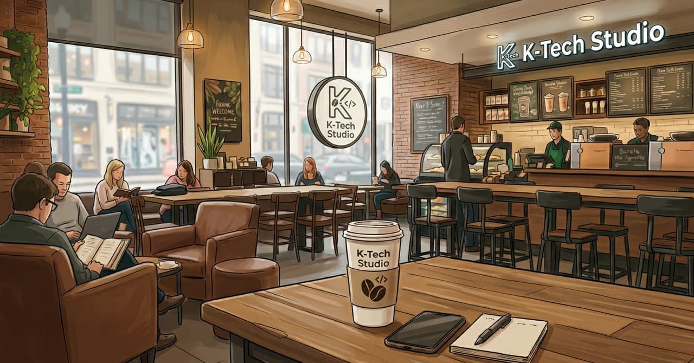

📓
ジャーナルに残す
Keep a journal
店、豆、焙煎、甘味・ボディ・酸味・風味・後味（1–5）、メモ。昨日の一杯が、今日の手がかりになります。
Shop, bean, roast, sweetness / body / acidity / flavor / aftertaste (1–5), and a memo. Yesterday’s cup becomes today’s clue.

豆、手順、味。昨日うまくいった抽出を、ジャーナルに残す。今日もう一度、同じ味に近づけるためのコーヒー記録アプリです。
Beans, pours, taste. Keep yesterday’s good cup in a journal, so today’s brew can meet it. A coffee record you actually return to.
記録は端末の中だけ。アカウント不要。
Records stay on your device. No account needed.
同じ豆でも、注ぎが変われば味は変わる。
手順を残し、味を残す。
The same beans can taste different if the pour changes.
Keep the method. Keep the taste.
感覚だけで終わらせない。淹れたあとに残すから、次の一杯が安定します。
Don’t let a good cup vanish. Write it down, and the next one can stay close.
店、豆、焙煎、甘味・ボディ・酸味・風味・後味（1–5）、メモ。昨日の一杯が、今日の手がかりになります。
Shop, bean, roast, sweetness / body / acidity / flavor / aftertaste (1–5), and a memo. Yesterday’s cup becomes today’s clue.
4:6メソッドのタイマー。豆量と比率から湯量を出し、甘み / バランス / 酸味、4投 / 5投で味と濃度を調整します。
A 4:6 method timer. Water from dose and ratio. Sweet / balanced / acid, 4 or 5 pours—taste first, then strength.
買った袋を先に登録。抽出のたびに使う豆を選ぶので、「どの豆でどう淹れたか」が切れません。
Register the bag first, then pick it when you brew. The bean and the method stay together.
5回以上淹れると、お気に入り豆・味の傾向・直近の平均が出ます。袋の重さと金額を入れると、コスパも使えます。
After five brews: favorite beans, taste tilt, recent average. Add bag weight and price for value ranking.
ドリップ中は画面を見ます。スマホ推奨、タブレットも可。注ぎと待ちの切り替わりで音の合図も出せます。
You watch the screen while you pour. Best on a phone; tablets work too. Optional sound cues at pour and wait.
サーバーに送りません。バックアップは自分で書き出せます。アカウントもログインも不要です。
Nothing is sent to our servers. Export your own backup. No account, no login.
豆を置いて、淹れて、味を書く。日記と同じ順番です。
Shelf the beans, brew, then write the taste—the same order as a diary.
店名と豆の名前を残します。袋の重さと金額は任意。両方入れるとコスパに使います。
Shop and bean name first. Bag weight and price are optional—both feed the value ranking.
使う豆を選び、豆量と比率を決める。円は投数で割れます。スケールの数字と画面の注湯量を合わせます。
Pick the bean, set dose and ratio. The ring splits by pour count. Match the on-screen water to your scale.
抽出が終わると、甘味から後味までを残します。次に同じ豆を淹れるときの、いちばん近いメモになります。
When the brew ends, log sweetness through aftertaste. That note is the closest map for the next cup of the same bean.
QR を読むか、ブラウザで開く。初めての方はホーム画面に追加してください。
Scan the QR or open in the browser. First-time visitors should add it to the Home Screen.
Cof-folio は無料です。役に立ったら、コーヒー1杯分の応援が今後のアップデートの励みになります。
Cof-folio is free. If it helped you brew a better cup, a coffee keeps the updates coming.